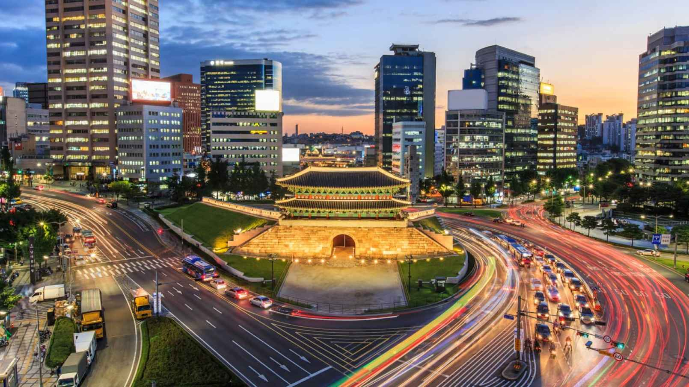

Interesting Facts About South Korea
- The name “Korea” comes from Goryeo, which was the name given to the dynasty established by General Wang Geon in AD 918. Goryeo means “high and clear.” Some poetic interpretations of the name Korea are “Land of High Mountains and Sparkling Streams” and “Land of the Morning Calm.” 
- In Korea, babies are considered one year old at birth.
- Only 3.2% of South Koreans are overweight, which ties the country of Japan for the lowest percentage in the world.
- South Koreans believe that leaving an electric fan on overnight will kill the person sleeping directly below it.
- South Koreans consider the number 4 as unlucky, and it is associated with death. This belief seems to have come from China.
- South Korea’s national dish is kimchi, which is a combination of vegetables and spices that have been fermented underground for months. It is served with almost everything. The first written description of making kimchi dates to about AD 1250 and there are about 170 varieties of the dish.
- South Koreans love shopping, and the country has some of the biggest shopping malls in the world. The stores are open until 4:00 in the morning, while most restaurants, bars, and cafes are open only until 11:00 p.m.
- The South Korean National Information Agency estimates that 14% of the people between the ages of 9 and 12 have an Internet addiction. In 2011, South Korea passed a law called the Shutdown, or Cinderella, Law that bans anyone younger than 16 from online game sites, which is largely ignored by the youth.
- Instead of air heaters, Koreans have heated floors. Called ondol (warm stone), the heat is passed in pipes under the floor. This heating system goes back to the Koguryo (or Goguryeo) Dynasty (37–668 BC). In South Korea, more than 90% of the houses have ondol, and people eat, sleep, and watch TV on the warm floor.
- On the South Korean island of Jeju, women traditionally go out to work while their husbands stay home. These women are called haenyeo (“sea women”), and they dive for sea urchins, abalone, and octopus, continuing a tradition that goes back 1,500 years and is passed down from mother to daughter.
- More than 2 billion people have viewed the “Gangnam Style” music video of Korean K-pop artist Psy since 2011. It topped the charts in 30 countries around the world. World leaders including U.S. President Barack Obama and British Prime Minister David Cameron have mimicked the dance. The song refers to the Gangnam District of Seoul.